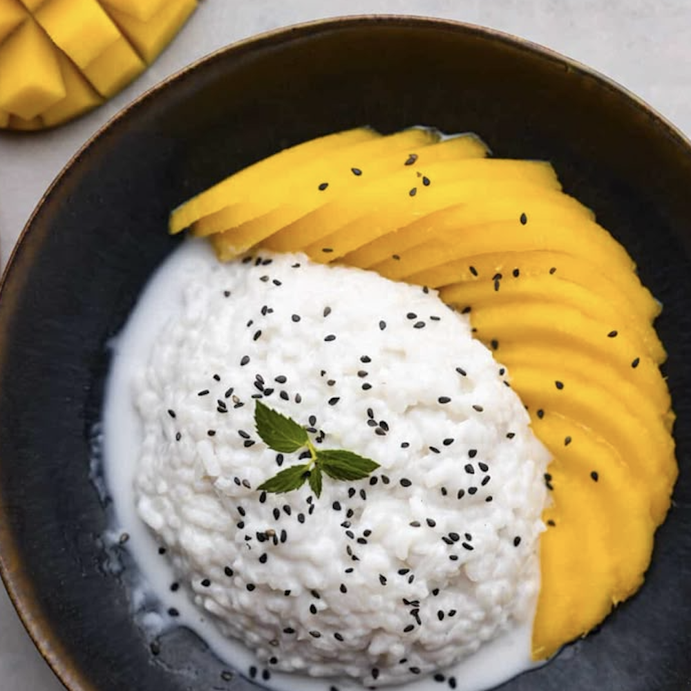

Mango Sticky Rice

Ingredients:
- 1 cup glutinous rice (sticky rice)
- 1 can (15 oz) coconut milk
- 1/2 cup sugar
- 1/4 tsp salt
- 2 ripe mangoes, peeled and sliced
Instructions:
- Rinse the glutinous rice under cold water until the water runs clear.
- Soak the rice in water for at least 4 hours or overnight.
- Drain the rice and steam it in a bamboo or metal steamer for about 30-40 minutes, or until
tender.
- In a saucepan, heat the coconut milk, sugar, and salt over low heat until the sugar
dissolves.
- Once the rice is cooked, transfer it to a large bowl and pour 1 cup of the coconut milk
mixture over it.
- Stir to combine and let it sit for about 30 minutes to absorb the flavors.
- To serve, place a portion of the sticky rice on a plate, top with sliced mangoes, and
drizzle with the remaining coconut milk.